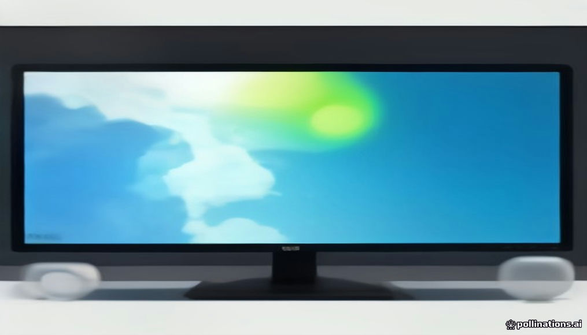
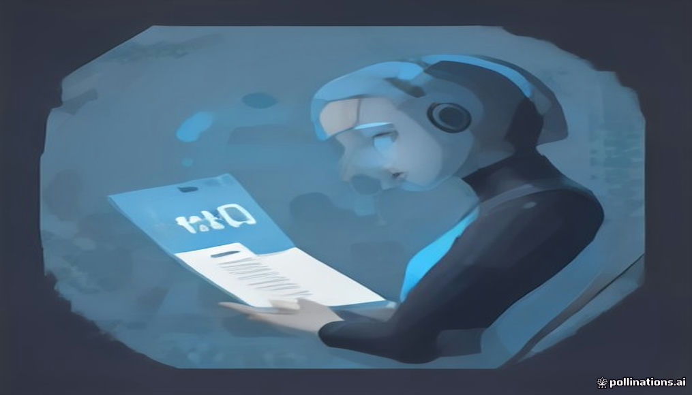

안녕하세요! 금요일 마케팅 소식 전해드립니다 😊 오늘은 월마트의 홀리데이 캠페인이 흥미롭습니다. 찰스 디킨스의 '크리스마스 캐럴'과 1992년 영화 '머펫 크리스마스 캐럴'을 동시에 재해석한 3부작 시리즈인데, 단순한 시즌 광고를 넘어 문화적 레퍼런스를 촘촘히 엮어 콘텐츠 자체에 서사를 부여한 방식이 돋보입니다. 지난 목요일 소개됐던 TBWA 보고서의 흐름과 연결해보면, 브랜드가 직접 '이야기의 제작자'가 되는 전략이 미국 대형 유통사에서도 본격적인 실행으로 이어지고 있습니다.
AI 검색 최적화 측면에서도 살펴볼 소식이 있습니다. 적정마케팅연구소의 분석에 따르면 AI 답변에서 유튜브를 인용하는 경우의 87%가 Google AI 오버뷰에서 발생했는데, 이는 영상 콘텐츠가 검색 결과를 넘어 AI 답변의 출처로 기능하기 시작했다는 의미입니다. SEO 전략에 영상 콘텐츠를 어떻게 포함시킬지 고민하는 팀이라면, 유튜브 채널 운영 방식과 콘텐츠 구조를 AI 인용 가능성 기준으로도 점검해볼 시점입니다.
금요일 아침, 한 주도 좋은 인사이트로 가득 채우셨길 바랍니다! 🙌

1AI 검색 최적화 솔루션 브레인드를 운영하는 적정마케팅연구소가 6개 AI 서비스의 유튜브 인용 현황을 분석한 결과, 유튜브를 출처로 인용한 AI 답변의 87%가 구글 AI 오버뷰에서 나온 것으로 확인됐다. 네이버 AI 브리핑은 30일 동안 유튜브 인용이 단 한 건도 없었으며, 구글 AI 오버뷰가 인용한 영상 중 30%는 조회수 1,000회 미만이었다. 영상 조회수보다 질문에 답하는 콘텐츠 구성이 AI 인용에 유리하다는 점에서, 유튜브 콘텐츠 전략을 GEO 관점으로 재검토할 필요가 있다.
› 🤖2광고 공급망 분석 기업 디크립트애즈가 생성형 AI로 콘텐츠를 대량 제작해 광고 수익을 올리는 저품질 웹사이트 2,116개를 발견했다. 해당 사이트에는 어도비·지멘스·펩시 등 유명 브랜드 광고가 게재된 것으로 나타났다. 프로그래매틱 광고를 집행하는 마케터는 광고 게재 지면의 품질을 주기적으로 점검하고 브랜드 세이프티 설정을 강화할 필요가 있다.
› 📰3TBWA의 문화 인사이트 조직 백슬래시가 발표한 보고서 『Becoming Uninfluenced』에 따르면, 응답자의 62%가 인플루언서가 되는 것보다 타인의 영향에 흔들리지 않는 사람이 되는 것이 더 매력적이라고 답했다. 온라인 대중적 인기에 대한 불신이 커지고 자신만의 취향을 중시하는 소비자가 늘고 있다는 의미다. 인플루언서 마케팅 의존도를 점검하고 소비자의 자율적 선택을 존중하는 방향의 브랜드 메시지 전략이 요구된다.
› 📣4매그나이트의 조사 보고서 '스트리밍 및 스크린: 한국'에 따르면 응답자의 52%가 1년 전보다 스트리밍 콘텐츠를 더 많이 시청하고 있으며, 45%는 새로운 서비스 이용 의향이 있다고 밝혔다. 시청자들은 하루 동안 모바일과 TV를 오가며 다양한 서비스를 이용한다. 스트리밍 광고는 단순한 도달 확대를 넘어 거실 대형 화면을 포함한 멀티스크린 전략으로 접근해야 효과를 높일 수 있다.
› 🤖5인크로스가 전국 만 15~69세 남녀 2,000명을 대상으로 실시한 '2026 아이엠 리포트'에 따르면, 생성형 AI 서비스 유료 결제자의 월평균 결제금액은 3만 5,932원으로 나타났다. AI 서비스 이용 경험이 확대되고 유료 결제 이용자도 증가하는 추세다. 소비자의 AI 서비스 지출이 실질적 수준에 도달한 만큼, AI 기반 마케팅 서비스의 유료 전환 전략 수립에 참고할 수 있는 데이터다.
›
6인플루언서 마케팅 플랫폼 피처링이 컨퍼런스 '퓨처링 26'에서 섭외부터 협상·계약·콘텐츠 검수까지 담당하는 '피처링 AI 에이전트'를 공개했다. 자체 데이터 엔진은 국내외 약 1,800만 개 채널과 4억 건 이상의 콘텐츠를 실시간 분석한다. 인플루언서 마케팅의 반복 업무를 AI가 대행하는 시대가 본격화되면서, 담당 마케터의 역할이 전략·성과 판단 중심으로 재편될 전망이다.
› 📰7미국 유통업체 월마트가 찰스 디킨스의 '크리스마스 캐럴'과 1992년 영화 '머펫 크리스마스 캐럴'을 재해석한 홀리데이 캠페인 '어 후 뉴 캐럴'을 3부작으로 선보였다. 배우 월튼 고긴스가 출연하며 친숙한 클래식 IP를 활용해 월마트의 상품과 쇼핑 혜택을 자연스럽게 노출했다. 검증된 문화 IP와 팝 컬처 캐스팅을 결합한 브랜드 스토리텔링이 홀리데이 시즌 광고의 효과적인 공식으로 자리잡고 있음을 보여주는 사례다.
›토스 앱인토스 김세련 PO·김지윤 디렉터 인터뷰, 추천·부스팅 미니앱이 되는 기준
브랜드 진단부터 지금 당장 해야 할 우선순위까지,
30분 무료 상담에서 함께 정리해드려요.
이미 수십 개 브랜드가 상담받았습니다.
내 브랜드처럼, 함께 고민하는 팀원의 마음으로 봅니다.
스타트업 대표·마케팅 담당자를 위한 30분